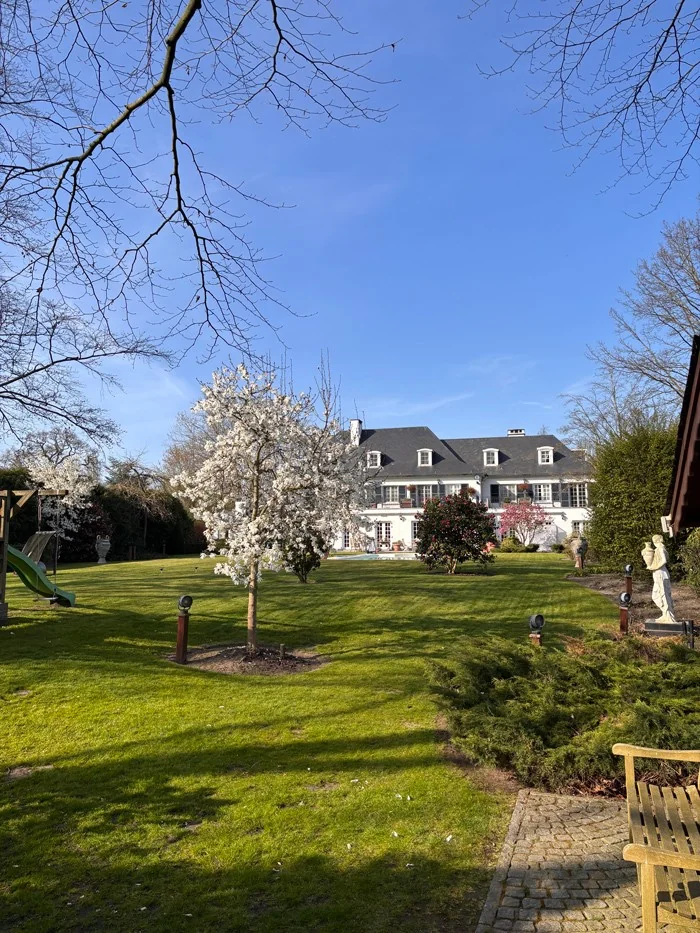
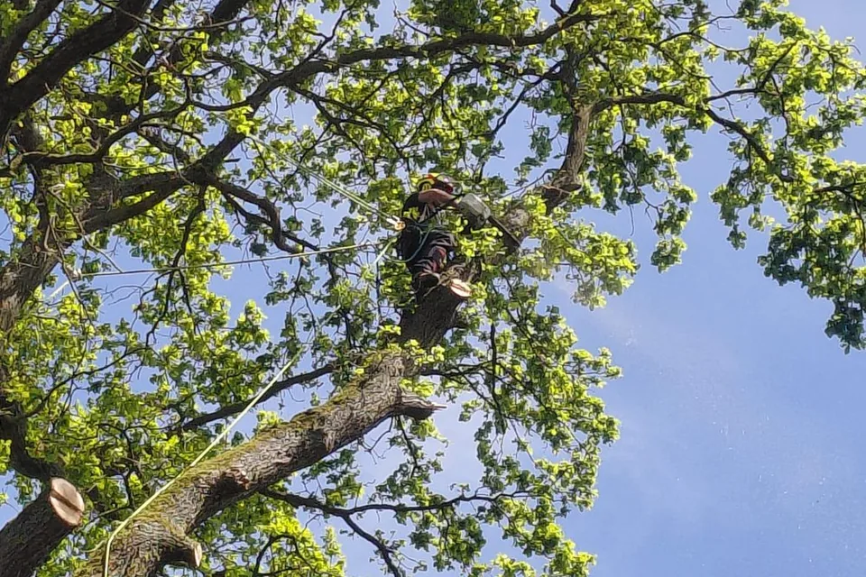
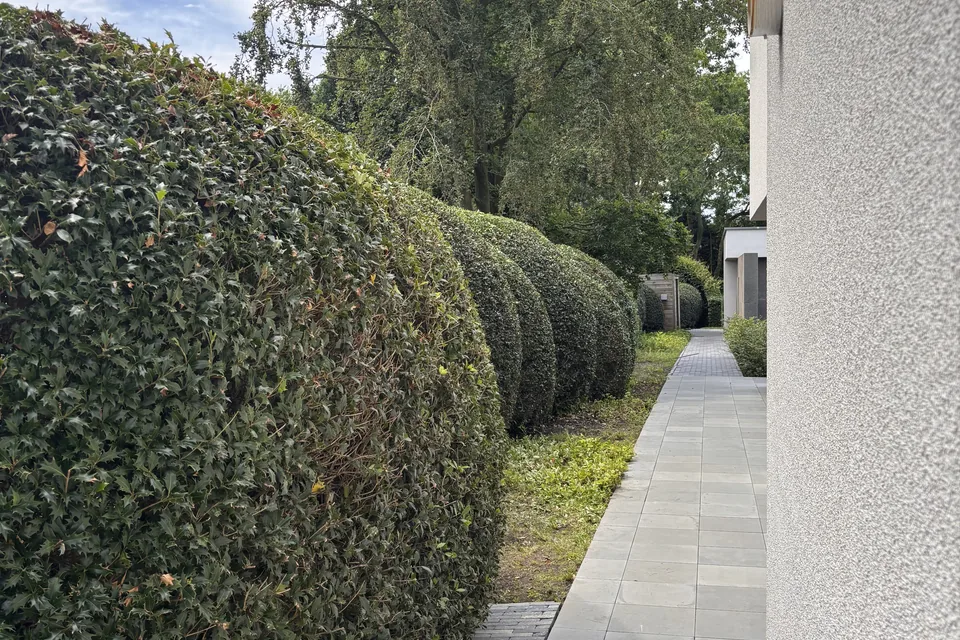
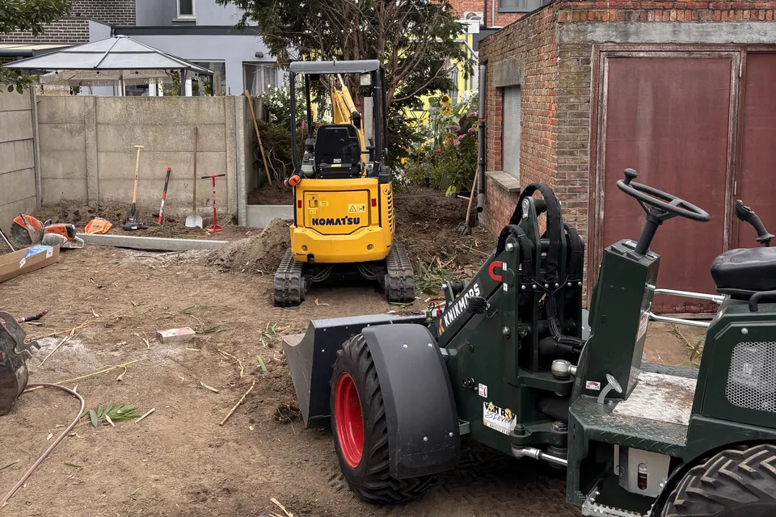
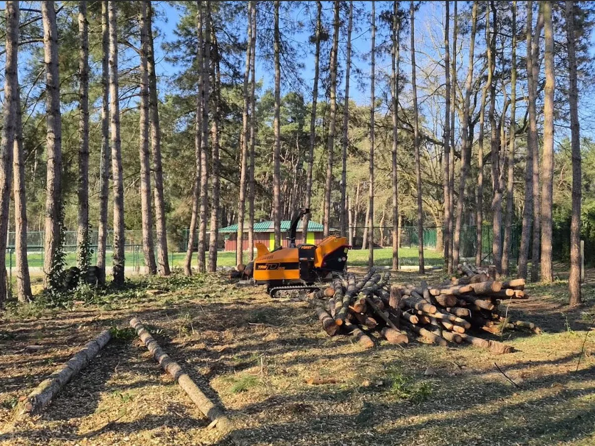
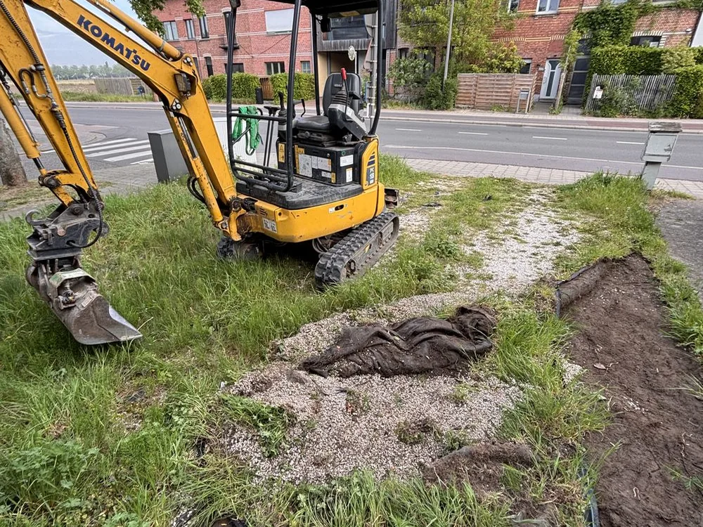
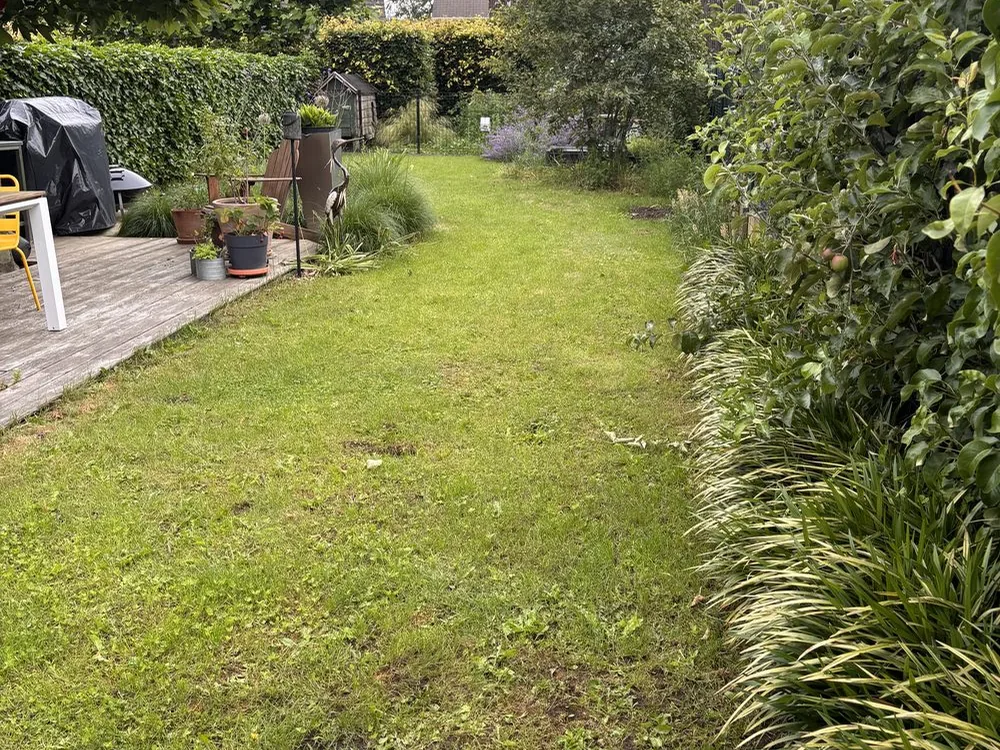

Boomverzorging in Vremde en Antwerpen
Boom & Tuinwerken Mylemans uit Vremde verzorgt bomen en tuinen in de volledige provincie Antwerpen. Voor boomverzorging, tuinonderhoud en tuinaanleg op maat.
Vraag een offerte aan
Boomverzorging
Veilige snoei en verwijdering van bomen met oog voor mens en natuur.
Bekijk boomverzorging →
Tuinonderhoud
Altijd een verzorgde tuin dankzij professioneel onderhoud op maat.
Bekijk tuinonderhoud →
Tuinaanleg
Van natuurlijk tot klassiek. Wij leggen tuinen aan volgens jouw wensen.
Bekijk tuinaanleg →Bekijk recente werken
Bekijk onze eigen foto’s van boomklimwerk, bosbouw, grondwerken en tuinonderhoud, gegroepeerd per type werk.



Over Boom & Tuinwerken Mylemans
Boom & Tuinwerken Mylemans is gevestigd in Vremde, deelgemeente van Boechout. We helpen met bomen snoeien en vellen, hagen scheren, gazononderhoud en de aanleg van tuinen. Ons werkgebied omvat de volledige provincie Antwerpen, van de Antwerpse rand tot Mechelen en de Kempen.
Vakmanschap
Zorgvuldige uitvoering van tuinaanleg, onderhoud en boomverzorging
Duurzaamheid
Respect voor de natuur en ecologisch verantwoord werken
Betrouwbaarheid
Transparante communicatie en nakomen van afspraken
Kwaliteit
Hoogwaardige materialen en perfecte afwerking
Wil je je tuin laten onderhouden, een boom laten verwijderen of een nieuw gazon aanleggen? Vertel ons wat er nodig is en in welke gemeente de werken plaatsvinden. We bespreken de aanpak. Voor tuinonderhoud kan je de tarieven opvragen; voor andere werken maken we een offerte op maat. Bekijk ook hagen scheren, bomen vellen en stronkenfrezen, of ontdek ons volledige werkgebied.
Wat klanten over ons zeggen
Ontdek waarom klanten kiezen voor Boom & Tuinwerken Mylemans